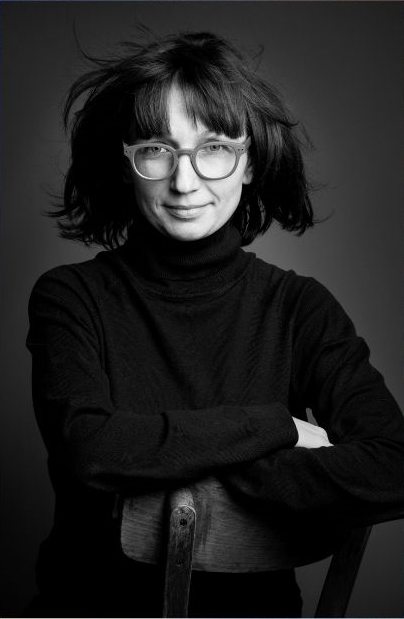
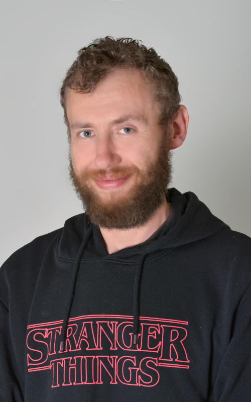
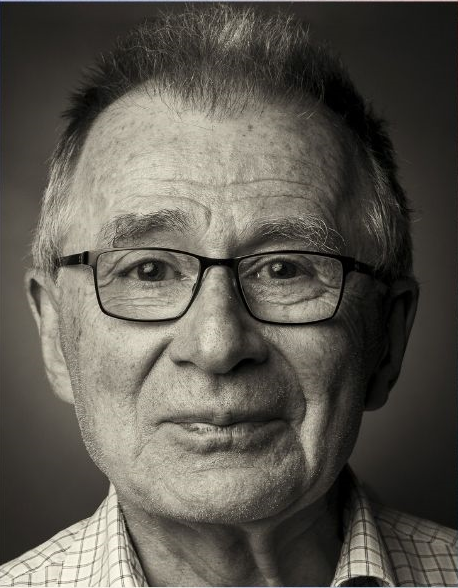

Warszawski Maraton Fotograficzny to konkurs adresowany do fotografów – pasjonatów, zaawansowanych fotografów, jak również amatorów. W ciągu 8 godzin uczestnicy muszą wykonać 8 zdjęć w 8 kategoriach a wszystkie zdjęcia robione są w Warszawie. W konkursie mogą wziąć udział osoby pełnoletnie lub dzieci od 13 r.ż. za zgodą opiekuna prawnego. Maraton Fotograficzny na świecie znany jest pod nazwą „Photomarathon”, od lat odbywa się w takich miastach jak Berlin, Sztokholm czy Szanghaj. Jego fani podróżują po całym świecie, podobnie jak uczestnicy maratonów biegowych, aby wziąć udział w tej imprezie w różnych miejscach i poznawać ich lokalną kulturę. Poprzedni edycje warszawskie odbyły się w 2018 i 2019 roku, po pandemicznej przerwie przywracamy maraton do stołecznego kalendarza wydarzeń. Warszawski Maraton Fotograficzny to przede wszystkim świetna zabawa i twórcza rywalizacja promującą miasto, jego kulturę i styl życia jego mieszkańców. Jest to doskonała okazja do wspólnego spędzenia czasu z rodziną i przyjaciółmi, przy okazji dobrze się bawiąc. Tematy zdjęć nie są znane uczestnikom z wyprzedzeniem. Jest to element gry przypominającej podchody, tyle że na koniec powstają dzieła sztuki. Każde wydarzenie ma swój temat przewodni. W 2018 roku była to „Warszawa”, a w 2019 „Życie w wielkim mieście”. W 2022 roku temat przewodni to „Pokojowo różnorodni”. Konkurs odbywa się w ciągu jednego dnia, uczestnicy robią zdjęcia w ciągu 8 godzin, aby na mecie oddać je do zgrania w formie elektronicznej. Cała pula poddawana jest weryfikacji regulaminowej a następnie przekazywana pod obrady Jury, w którego grono wchodzą znane osobistości ze świata fotografii, znawcy i historycy Warszawy oraz przedstawiciele partnerów. Konkurs wieńczy finałowa Gala, na której przyznawane są nagrody dla zwycięzców każdej z ośmiu kategorii oraz dla laureatów miejsc 1-3 za serię ośmiu zdjęć. Wydarzenie odbywa się pod Honorowym Patronatem Prezydenta M. St. Warszawa
Zasady Uczestnictwa
Dowiedz się wszystkiego, co musisz wiedzieć zanim przystąpisz do fotomaratonu.
ZAPISZ SIĘ
REGULAMIN
Jury

Marek Grygiel
Przewodniczący Jury
Chris Niedenthal
Członek Jury
Mikołaj Grynberg
Członek Jury

Beata Łyżwa-Sokół
Członek Jury

Filip Siemaszko
Członek Jury
Kinga Łozińska
Członek Jury

Adam Erdheim
Członek JuryPartnerzy


Galeria